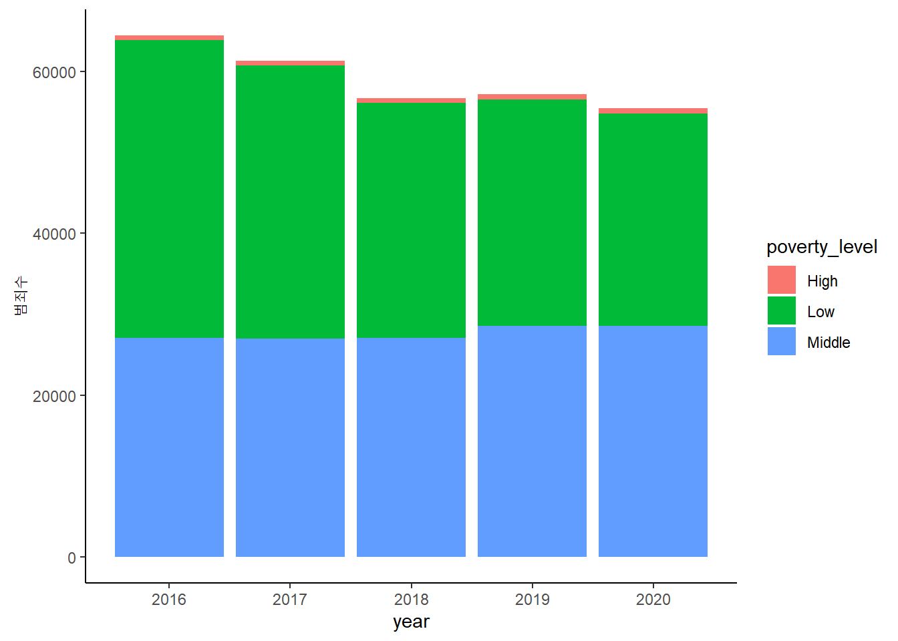
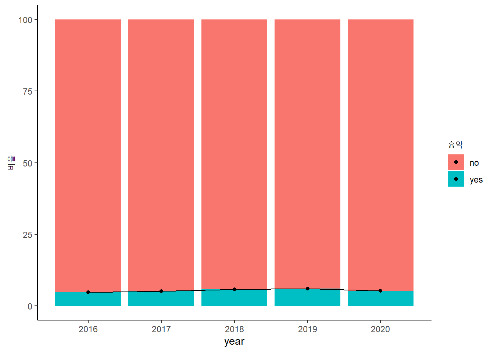

“저는 소년범을 혐오합니다”
넷플릭스에서 국내를 넘어 국외에서도 화제인 드라마 ‘소년심판’ 심은석(김혜수 역)판사의 대사입니다. 최근 사회적으로 충격을 안겨준 흉악한 소년 범죄를 떠올리면서 이 대사에 공감하는 사람이 적지 않을 것입니다. “나중에 재판 다 끝나고 나서 ‘아, 법 참 쉽네’ 우습게 여기면 그땐 어떡합니까?”, “쟤들 커서 더 큰 범죄로 지후 같은 피해자들 계속 생겨나면 그땐 누가 책임집니까?” 드라마는 심은석 판사를 통해 사회적으로 논란이 많은 ‘촉법소년’에 대해서 거침없는 사이다 발언을 던집니다. 범죄를 저질러도 처벌 대신 보호처분을 받는 ’촉법소년’을 놓고 많은 이들이 우려의 시선을 보내고 있습니다. 우리 법에서 정한 촉법소년 나이는 만10~14세 미만. 만10세 이상 14세미만 소년은 보호처분 대상이 되고, 14세부터 19세 미만의 소년범은 범죄소년으로 불리며 형사책임능력자로서 형벌을 부과받을 수 있지만 이들에게 형벌 대신 보호처분을 우선하도록 법이 규정하고 있습니다. 중범죄를 저지르면 성인들과 유사하게 형사처벌을 받기도 하지만 형량이 최대 15년으로 제한되어있습니다. 윤석열 대통령은 촉법소년 연령 기준을 만 12세까지 낮추겠다고 한 바 있습니다. 이어 최근 법무부가 관련 내용을 검토해 추진하겠다고 대통령직인수위원회에 보고하면서 ’촉법소년 연령 하향화’ 논의가 급물살을 타고 있습니다. 하지만 전문가들은 처벌 강화가 소년 범죄 감소에 도움이 되지 않는다고 지적합니다. 소년법의 취지는 소년들을 교육하고 선도하는 것인데, 연령 하향은 정치권에서나 행정상 제시할 수 있는 간단한 방법일 뿐 실제로 교화에 도움이 되지 않는다는 것입니다. 과연 소년법을 강화하거나 혹인 아예 폐지하는 것이 옳은 방법일까요?
소년들은 미래에 사회를 이끌어갈 존재들이며 아직 미성숙한 소년들은 사회의 시스템으로 보호받아야 할 필요가 있습니다. 이러한 소년들에게 모든 잘못을 그들의 탓으로 돌리고 범죄자로 낙인 찍는 일은 장차 우리 사회에서 중요한 역할을 할지도 모르는 구성원을 스스로 쳐내는 것이나 다름없습니다. 즉, 소년범들의 범죄는 그들에게만 책임을 지게 할 일이 아니라는 것입니다. 소년범들의 범죄는 국가 그리고 그 이전에 가정환경에서 그 원인을 찾아볼 필요가 있습니다. 우리가 주목해보아야 할 부분은 소년범들의 가정환경에 따라 범죄율이 달라진다는 점입니다.
소년범(피의자)의 생활정도(피의자의 재산상태, 가족관계, 신분 및 사회적 지위, 학력 및 경력 등을 파악하여 종합적, 객관적으로 판단한 정도)를 상, 중, 하 3그룹으로 나누어 비교해 보았습니다. 2016년부터 2020년까지의 ‘상’ 그룹에서의 범죄수는 약 600명이었으며 ‘중’, ‘하’ 그룹은 평균 30000명으로 나타났습니다. 이와 같은 데이터를 보았을 때, 생활정도가 ‘상’ 그룹에 속해 있는 소년범들은 ‘중’ 그룹과 ‘하’ 그룹보다 현저하게 범죄수가 낮은 것을 확인할 수 있습니다.
하지만 소년범들의 범죄 중에는 환경이 좋지 않은 소년들의 범죄가 많다는 이유만으로 소년들의 모든 범죄를 보호처분으로 해결하기에는 범죄의 질이 극악무도한 경우도 존재합니다. 그렇다면 위와 같은 일부의 흉악범죄들을 방지하기 위해서 모든 소년들에게 적용되는 소년법을 폐지해야 하는 걸까요?

2016년부터 2020년의 전체 소년범죄 중 흉악범죄의 비율은 5~6%입니다. 소년법을 폐지하기에는 다소 적은 수치입니다. 또한 연도별로 흉악범죄의 비율을 비교해 보았을 때, 2016년 4.8%, 2017년 5.2%, 2018년 5.8%, 2019년 6.1%, 2020년 5.4%로 유의미한 증가량을 보이고 있지도 않습니다. 그러므로 흉악범죄를 저지른 일부 소년범들 때문에 소년법을 강화하거나 폐지한다면 이는 잘 교화된다면 충분히 훌륭한 사회의 구성원으로 성장할 수 있는 다른 소년들을 포기하는 처사나 다름없습니다.
위 데이터들을 바탕으로 확인해본 바와 같이 소년법을 폐지하거나 그 연령을 하향 조정한다면 이는 우리 사회가 나눠져야할 짐을 소년들에게 모두 지게 하는 결정이며 상당수의 소년들에게서 올바르게 성장할 수 있는 기회를 뺐는 것이나 다를 바가 없습니다. 단순히 소년법을 페지하거나 소년범에 대한 처벌을 강화하는 등의 방법보다는 보호관찰관 수를 늘리고 소년보호시설 등에 대한 지원을 통해 단순히 처분만 내리는 것이 아닌 실제로 소년들이 교화가 이루어지는 현장에 대한 지원을 확대하는 방향으로 나아가야할 것입니다. 소년법에서의 가장 중요한 가치가 ’교화’라는 것을 잊으면 안 됩니다.